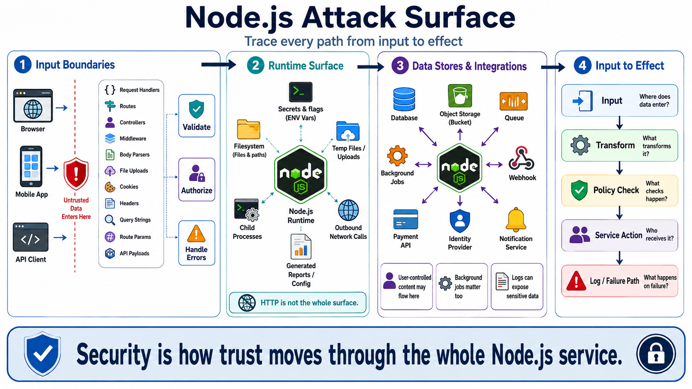

Node.js Runtime and Application Attack Surface
Connecting to LMS... Progress: in progress

Narration
A Node.js application's attack surface begins where untrusted data crosses into trusted application logic. Request handlers, routes, controllers, middleware, body parsers, file upload handlers, cookies, headers, query strings, route parameters, and API payloads all shape what the application believes about the outside world. Each boundary deserves an explicit decision about validation, authorization, and error handling.
The runtime surface is broader than HTTP. Environment variables may contain secrets, feature flags, URLs, and deployment-specific behavior. File system access can expose paths, temporary files, uploads, generated reports, and configuration. Child processes can turn a small input-handling mistake into a system-level risk if command construction is unsafe. Network calls can expose internal services when outbound requests are not controlled.
Data stores and third-party integrations also extend the surface. Database queries, object storage, queues, caches, background jobs, webhooks, payment APIs, identity providers, and notification systems all receive or produce data that may affect security decisions. A background job may run outside the normal request path but still process user-controlled content. Logs may look passive, yet they can expose sensitive information if treated casually.
A useful mental model is to trace every path from input to effect. Where does data enter? What transforms it? What policy checks happen? What service receives it? What is logged? What happens on failure? This view keeps the conversation grounded. Security is not only about one route or one library. It is about how trust moves through the whole Node.js service.